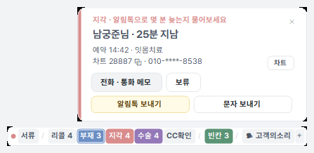
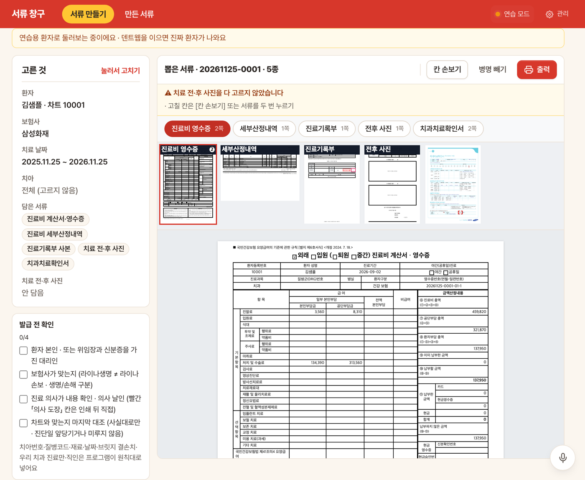

홈 › 치과 자동화
치과 자동화, 데스크부터 — 치과 데스크 자동화 프로그램
치과 데스크 선생님의 하루는 서류 뽑기, 리콜 전화, 부재중 다시 걸기, 지각 환자 확인처럼 매일 되풀이되는 일로 채워집니다. 치과 데스크알리미는 덴트웹을 쓰는 치과에서 이 일을 자동화하는 프로그램입니다(치과자동화 · 치과 데스크 자동화). 치과 원장이 자기 데스크에서 쓰려고 만들었습니다.
치과 데스크 자동화 — 무엇이 바뀌나
본원 데스크에서 실제로 쓰는 기능만 적었습니다.
| 데스크 일 | 손으로 할 때 | 치과 데스크알리미로 자동화 |
|---|---|---|
| 보험 청구 서류 | 계산서·영수증, 세부산정내역, 진료기록부 사본, 치료 전·후 사진, 치과치료확인서를 하나씩 찾아 뽑기 | 서류 창구에서 네 걸음 고르고 [서류 뽑기] 한 번 |
| 리콜 전화 | 덴트웹에서 명단 뽑고, 누구부터 걸지 정하고, 할 말 생각하기 | 오늘 전화할 분 순서와 첫마디가 카드로 뜸 |
| 통화 기록 | 통화 뒤 차트에 결과 적고 보고서 따로 쓰기 | 통화 결과가 덴트웹 차트에 저절로 기록 |
| 부재중 전화 | 못 받은 번호를 메모해 두었다가 다시 걸기 | 다시 걸 명단이 막대 숫자로 뜨고, 다 걸면 0 |
| 지각 환자 | 예약표를 보다가 안 오신 분 찾기 | 예약 15분이 지나면 전화할 카드가 먼저 뜸 |
| 수술 전·후 콜 | 내일 수술·어제 수술 환자를 따로 찾기 | 한 목록에 모아 줌 |
| 예약 빈자리 | 취소된 칸에 부를 환자를 머리로 고르기 | 그 시간에 부를 환자 후보를 골라 줌 |

덴트웹은 그대로, 위에 막대 하나
새 차트 프로그램으로 옮기는 자동화가 아닙니다. 지금 쓰는 덴트웹 위에 막대가 떠서, 덴트웹 기록을 읽고 할 일을 먼저 알려 줍니다. 그래서 바꿀 것도 배울 것도 거의 없습니다.
써 본 데스크 선생님의 말
「실비 서류를 한꺼번에 뽑으려면 정말 시간이 많이 걸렸는데, 이제는 클릭 한 번이라 너무 편해요.」본원 데스크 선생님



손으로 하면 이렇게 — 데스크 일 다섯 가지
데스크 일마다 손으로 할 때 거치는 단계와, 치과 데스크알리미로 할 때를 나란히 적었습니다.
치과 보험 청구(실비·치아보험)할 때 치과에서 떼 주는 서류는 뭐예요?
- 환자분께 보험사 이름과 청구할 기간(예: 최근 1년)을 여쭤요.
- 전자차트에서 계산서·영수증과 세부산정내역을 기간을 넣어 하나씩 출력해요.
- 보험사가 진료기록부 사본을 달라고 하면 같은 기간으로 출력해요.
- 보험사별 치과치료확인서 양식을 찾아 치아 번호·상병명·치료 내용을 옮겨 적어요.
- 필요하면 치료 전·후 엑스레이·구내 사진을 골라 따로 인쇄해요.
치과 데스크알리미로는 데스크알리미(덴트웹 화면 위에 뜨는 막대형 도우미)를 깔면 막대의 [서류] → 「서류 창구」에서 ① 환자 찾기 → ② 날짜·치아(치료 날짜 [1년]) → ③ 서류 담기 → ④ 사진 담기 → [서류 뽑기] → [출력] 순서로 서류가 한꺼번에 나와요. 「서류 담기」에서 다섯 가지가 처음부터 체크(✔)되어 있으니, 보험사가 안 달라는 서류만 한 번 눌러 빼면 돼요. 치료 전·후 사진도 추천 사진이 먼저 들어가 있어요.
덴트웹에서 리콜할 환자 목록은 어떻게 뽑아요?
- 예약·환자 조회 화면에서 마지막 내원일이 오래된 환자(예: 6개월 이상)를 찾아요.
- 그중 앞으로 잡힌 예약이 없는 분만 남겨요.
- 치료가 중간에 멈춘 분(예약 취소·미내원)을 따로 표시해요.
- 엑셀이나 종이에 옮겨 적고 전화 순서를 정해요.
치과 데스크알리미로는 데스크알리미는 다시 오셔야 하는데 예약이 없는 환자분을 골라 막대 [리콜]에 오늘 명단을 보여 줘요. 막대의 숫자 = 아직 전화 안 한 분 수(다 하면 0). 목록 위 [테마 ▾]로 「치료 중단 · 6개월」「12세 전 레진」「임플란트 보철 미완료」처럼 묶음별로만 볼 수 있어요.
치과 부재중 전화는 어떻게 관리해요?
- 전화기의 부재중 기록을 확인해요.
- 번호로 차트를 찾아 누군지 확인해요.
- 다시 건 번호는 장부에 체크해 다른 선생님과 겹치지 않게 해요.
치과 데스크알리미로는 데스크알리미는 못 받은 전화가 쌓이면 막대 [부재]에 숫자를 띄우고 다시 걸 명단을 보여 줘요. 다 걸면 0이 돼요.
예약 시간이 지났는데 안 오는 환자(지각)는 어떻게 챙겨요?
- 예약표에서 접수 안 된 예약을 수시로 확인해요.
- 15분쯤 지나면 전화해 오시는지, 다른 날로 옮길지 여쭤요.
치과 데스크알리미로는 데스크알리미는 예약 시간 15분이 지나도 안 오시면 전화할 카드를 먼저 띄워요. 막대 [지각]에 늦은 환자 수가 보여요.
수술 전날·다음 날 확인 전화(수술콜)는 어떻게 안 빠뜨려요?
- 매일 내일 수술 예약과 어제 수술한 분을 예약표에서 뽑아요.
- 전날 콜(준비사항 안내)·다음 날 콜(통증·붓기 확인)을 하고 체크해요.
치과 데스크알리미로는 데스크알리미는 내일 수술할 분, 어제 수술한 분을 한 목록에 모아 막대 [수술]에 남은 수를 보여 줘요.
자주 묻는 질문
- 치과 자동화 프로그램은 덴트웹을 바꿔야 하나요?
- 아닙니다. 치과 데스크알리미는 지금 쓰시는 덴트웹 화면 위에 막대로 떠서 일합니다. 덴트웹에 적는 것은 통화 결과 같은 메모뿐이고 진료 기록은 바꾸지 않습니다.
- 치과 데스크 자동화는 무엇부터 하면 좋나요?
- 시간이 가장 많이 드는 일부터 합니다. 본원 데스크에서는 보험(실비) 서류 뽑기와 리콜 전화 정하기가 가장 오래 걸려 이 둘부터 자동화했습니다.
- 설치는 오래 걸리나요?
- 데스크 PC(Windows)에서 명령어 한 줄, 1~2분이면 끝납니다. 교육 없이 막대의 숫자와 카드만 따라 누르면 됩니다.
- 요금은 얼마인가요?
- 요금은 카카오톡 「데스크알리미 문의방」에서 안내해 드려요.
- 덴트웹이랑 같이 쓰는 데스크 도우미 프로그램이 있나요?
- 데스크알리미가 있어요. 덴트웹(치과 전자차트)을 쓰는 데스크 PC에 깔면 화면 오른쪽 아래에 막대가 떠서, 보험 청구 서류를 「서류 창구」에서 한 번에 뽑기·리콜 전화 명단과 첫마디·부재중·지각·수술콜·빈자리 채우기를 챙겨 줘요. 덴트웹 기록은 그대로 두고, 통화 결과 같은 메모만 차트에 적어 줘요.
- 데스크 PC가 두 대인데 두 번째 PC에도 쓸 수 있어요?
- 네. 두 번째 PC부터는 라이센스 키를 다시 넣지 않고, 먼저 깐 PC의 서버 주소(숫자 한 줄)만 있으면 붙어요.
- 데스크알리미 문의나 설치 도움은 어디서 받아요?
- 카카오톡 오픈채팅 「데스크알리미 문의방」(open.kakao.com/o/sI7lIiYi)에서 1:1로 물어보면 돼요. 막힌 화면을 캡처해 보내면 원격으로 같이 봐 드려요.